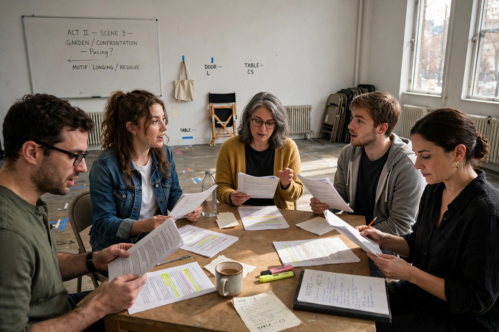

| Ryūsuke Hamaguchi | |
| Born | December 16, 1978, Kanagawa, Japan |
|---|---|
| Occupation | Film director, screenwriter |
| Years active | 2001–present |
| Notable work | Happy Hour, Wheel of Fortune and Fantasy, Drive My Car |

Ryūsuke Hamaguchi (濱口 竜介, Hamaguchi Ryūsuke; born December 16, 1978) is a Japanese film director and screenwriter. His intimate, dialogue-driven dramas — above all Drive My Car (2021) — brought him the Academy Award for Best International Feature Film and a central place in contemporary world cinema.
Hamaguchi graduated from the University of Tokyo and worked in commercial film before completing a master's at Tokyo University of the Arts, where his thesis film Passion (2008) drew notice. After the 2011 Tōhoku earthquake he co-directed a trilogy of oral-history documentaries about survivors. His five-hour drama Happy Hour (2015), made with non-professional actors in Kobe, won the ensemble cast a Best Actress award at Locarno and established his international reputation.
In 2021 Hamaguchi achieved a rare double: Wheel of Fortune and Fantasy won the Silver Bear Grand Jury Prize at Berlin, and Drive My Car, adapted from a Haruki Murakami story about a widowed stage director producing Uncle Vanya, won Best Screenplay at Cannes and the Academy Award for Best International Feature Film, with nominations for Best Picture and Best Director.
Hamaguchi is known for extended rehearsals in which actors read lines flatly and repeatedly ("hon-yomi"), stripping away habitual expression so that emotion emerges from the text and from listening — a technique central to his films' celebrated long conversations.